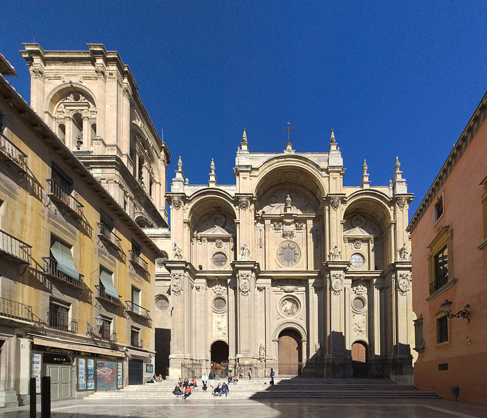

La Santa Iglesia Catedral Metropolitana de la Encarnación de Granada es un templo católico de la ciudad española de Granada, sede de la archidiócesis de la ciudad. El templo es una de las obras cumbres del Renacimiento español.
Durante el renacimiento, el Reino de Granada, al igual que Galicia, conformó un centro artístico independiente del estilo predominante en el resto de la península, el herrerianismo.
Con el reinado de Carlos I de España se llevarán a cabo numerosas construcciones en la ciudad de Granada, dada la intención del monarca en convertir a la urbe en el modelo de ciudad del siglo XVI. Así la construcción de la catedral de Granada será coetánea a las de el palacio cristiano de la Alhambra, la Universidad y la chancillería.
El primer proyecto fue encomendado en 1506 a Enrique Egas que concibió un templo de estilo gótico, tomando como modelo la Catedral de Toledo. Las obras comenzaron, bajo la dirección del propio Egas, con la colocación solemne de la primera piedra el 25 de marzo de 1523. Sin embargo, fue Diego de Siloé quien, en 1529, se encargó de las obras, que se concluirán en 1563, presentando un nuevo proyecto mucho más ambicioso. El autor trazó las líneas renacentistas de todo el edificio sobre los cimientos góticos, con girola y cinco naves en lugar de las tres habituales, combinando en su estructura elementos de otros órdenes arquitectónicos.
Con la llegada de la política centralista de Felipe II y, especialmente, con la expulsión de los moriscos de 1609, la región perdió gran parte de su fuerza económica y quedó relegada frente a otros centros locales. Sin embargo, sí se continuó desarrollando proyectos artísticos de importancia. Es el caso de la reforma de la fachada principal emprendida por Alonso Cano en 1664, en la que se introdujeron elementos barrocos.
De planta circular se plantea prácticamente como un elemento autónomo tanto en planta como en alzado, perfectamente integrado en la estructura longitudinal de cinco naves. Diseñada para servir de panteón y albergar los nichos mortuorios de los Austrias, esta función se desecha cuando Felipe II construye el Monasterio del Escorial. Los arcos destinados a las tumbas reales pasan a ser ocupados por las pinturas de Alonso Cano representando escenas de la vida de la Virgen (1652-1654).
La capilla está decorada con vidrieras pintadas por Dirk Vellert (Teodoro de Holanda) y Juan del Campo (1558-1561). En ella destacan las esculturas orantes de los Reyes Católicos debidas a Pedro de Mena y los bustos de Adan y Eva realizados por Alonso Cano. Destacan también el Apostolado de Bernabé de Gaviria y las pinturas realizadas por Pedro Atanasio Bocanegra y Juan de Sevilla.
| Precio | |
|---|---|
| Entrada General | 5€ |
| Estudiantes, Discapacitados y Niños +12 Años | 3.5€ |
| Menores 12 años | Gratis |
| Horario | |
|---|---|
| Lunes a Sábado | 10:00-18:30 |
| Domingos y Festivos | 15:00-17:45 |